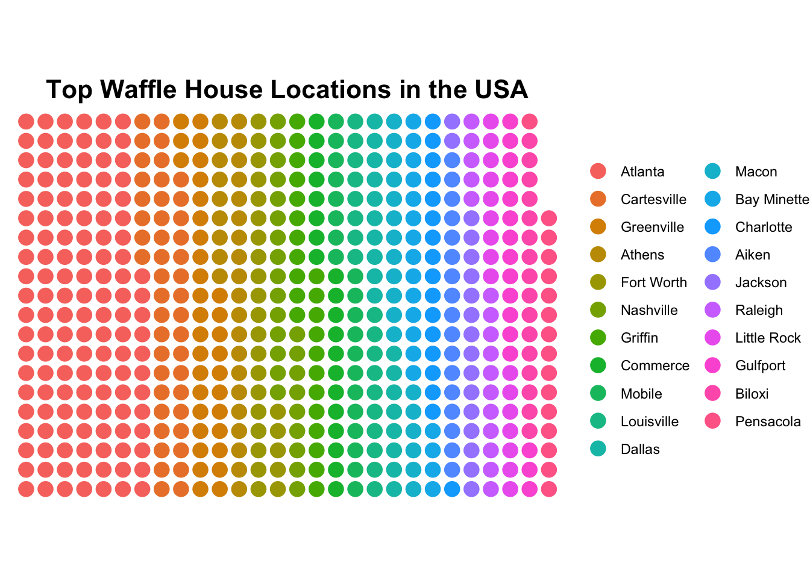

2 Waffle
I blame Richard Mcelreath for introducing me to Waffle House. I’ve never met him and I’ve never been to Waffle House, but every time I hear “waffle” I think of his brilliant lecture that featured waffle houses being potentially blamed for high divorce rates in the USA (States with high divorce rate also have higher numbers of Waffle Houses. Of course, the link is not causal…)
So when today’s plotting theme was “waffle”, I had to do something with Waffle Houses. A basic idea was to construct a waffle plot showing the frequency of Waffle House locations in the USA. I tried lots of places to get at the location data for Waffle Houses, and any attempt to find a database of locations I could download was met with a rather ridiculous fee (minimum of $60!). In the end I found some fractional data from this Huffington Post post. So, we will go with this.

It only provdes the data from the top 21 locations, so this is what we will use. Let’s get it into R:
waffle_raw_data <- tibble(
location = c("Atlanta", "Cartesville", "Greenville", "Athens", "Fort Worth",
"Nashville", "Griffin", "Commerce", "Mobile", "Louisville",
"Dallas", "Macon", "Bay Minette", "Charlotte", "Aiken", "Jackson",
"Raleigh", "Little Rock", "Gulfport", "Biloxi", "Pensacola"),
number = c(132, 45, 34, 29, 25, 24, 23, 20, 20, 18, 18,
18, 18, 17, 17, 17, 16, 16, 16, 16, 16)
) %>%
mutate(location = as_factor(location))
waffle_raw_data# A tibble: 21 × 2
location number
<fct> <dbl>
1 Atlanta 132
2 Cartesville 45
3 Greenville 34
4 Athens 29
5 Fort Worth 25
6 Nashville 24
7 Griffin 23
8 Commerce 20
9 Mobile 20
10 Louisville 18
# ℹ 11 more rowsTo do a waffle plot, we need a tibble where each location is repeated n times, where n comes from the number column. We can do this using the uncount() function in the tidyr package (comes installed with the tidyverse):
# A tibble: 555 × 2
location number
<fct> <dbl>
1 Atlanta 132
2 Atlanta 132
3 Atlanta 132
4 Atlanta 132
5 Atlanta 132
6 Atlanta 132
7 Atlanta 132
8 Atlanta 132
9 Atlanta 132
10 Atlanta 132
# ℹ 545 more rowsOnce we have this, we can use the ggwaffle package (link here). It uses the wonderfully titled waffle_iron() function to get the data into the right shape for the waffle plot. Or, to put it in the words of the package help file:
Pour your data into a waffle iron to get ready to cook a waffle chart.
Lovely stuff.
# devtools::install_github("liamgilbey/ggwaffle")
library(ggwaffle)
waffle_plot_data <- waffle_data %>%
waffle_iron(aes_d(group = location)) %>%
as_tibble()
waffle_plot_data# A tibble: 555 × 3
y x group
<int> <int> <fct>
1 1 1 Atlanta
2 2 1 Atlanta
3 3 1 Atlanta
4 4 1 Atlanta
5 5 1 Atlanta
6 6 1 Atlanta
7 7 1 Atlanta
8 8 1 Atlanta
9 1 2 Atlanta
10 2 2 Atlanta
# ℹ 545 more rowsThis has added the appropriate x- and y-coordinates for each “data point” that will serve as a hole in our waffle plot. We can now pass this data to ggplot2 with a standard ggplot call establishing the x- and y-axes, but then adding a call to geom_waffle() from the ggwaffle package:
waffle_plot_data %>%
ggplot(aes(x = x, y = y, fill = group)) +
geom_waffle()
A decent start, but the data points don’t look great as they are stretched; ideally they should be symetrical. You can do this by adding coord_equal() to the ggplot calls.
waffle_plot_data %>%
ggplot(aes(x = x, y = y, fill = group)) +
geom_waffle() +
coord_equal()
OK, but now the plot is way too small. I spent absolutely ages trying to work out how to remove all of the white space from around the plot. One solution I was looking for was manually changing the number of rows and columns in the waffle plot. In the end—and don’t ask me why it took me so long to check here—I found the following issue in the GitHub repository for the ggwaffle package, which suggested that I needed to look at the waffle_iron() function rather than the geom_waffle() call. As it turns out, I just add rows = 20 to the waffle_iron() call and then pass this new data to the plotting functions
waffle_raw_data %>%
uncount(weights = number, .remove = FALSE) %>%
waffle_iron(aes_d(group = location),
rows = 20) %>%
ggplot(aes(x = x, y = y, fill = group)) +
geom_waffle() +
coord_equal()Warning: Using the `size` aesthetic in this geom was deprecated in ggplot2 3.4.0.
ℹ Please use `linewidth` in the `default_aes` field and elsewhere instead.
OK, finally we’re getting somewhere! Let’s tidy this up a bit by removing the x- and y-axes and their labels:
waffle_raw_data %>%
uncount(weights = number, .remove = FALSE) %>%
waffle_iron(aes_d(group = location),
rows = 20) %>%
ggplot(aes(x = x, y = y, fill = group)) +
geom_waffle() +
coord_equal() +
theme_void() +
labs(fill = NULL) 
You can change the squares to circles on a waffle plot by using geom_waflle(tile_shape = "circle"), but need to change the colouring to colour rather than fill in the ggplot aes() call:
waffle_raw_data %>%
uncount(weights = number, .remove = FALSE) %>%
waffle_iron(aes_d(group = location),
rows = 20) %>%
ggplot(aes(x = x, y = y, colour = group)) +
geom_waffle(tile_shape = "circle", size = 4) +
coord_equal() +
theme_void() +
labs(colour = NULL) Let’s just add a title and we’re probably done. Initial attempts showed the title was too small and left-aligned too extremely. So I had to invoke a series of theme(plot.) function calls to get it right
waffle_raw_data %>%
uncount(weights = number, .remove = FALSE) %>%
waffle_iron(aes_d(group = location),
rows = 20) %>%
ggplot(aes(x = x, y = y, colour = group)) +
geom_waffle(tile_shape = "circle", size = 4) +
coord_equal() +
theme_void() +
labs(colour = NULL,
title = "Top Waffle House Locations in the USA") +
theme(plot.title = element_text(hjust = 0.5,
size = 16,
face = "bold"))